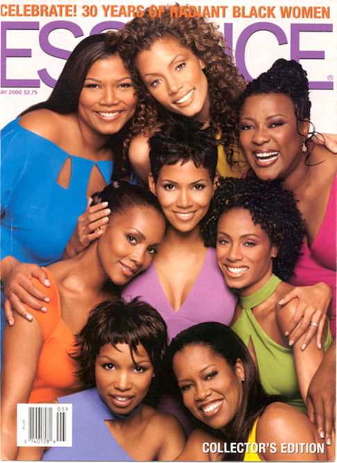

2000
2000s The Mash-up Decade
Following the 1990s, fashion in the 2000s moved away from the minimalist approach, incorporating the fusion of trends from several different styles. By the early 2000s, designers began incorporating more color and pattern into their clothing, using inspiration from vintage clothing of the 1960s, 1970s, and 1980s.

HOME